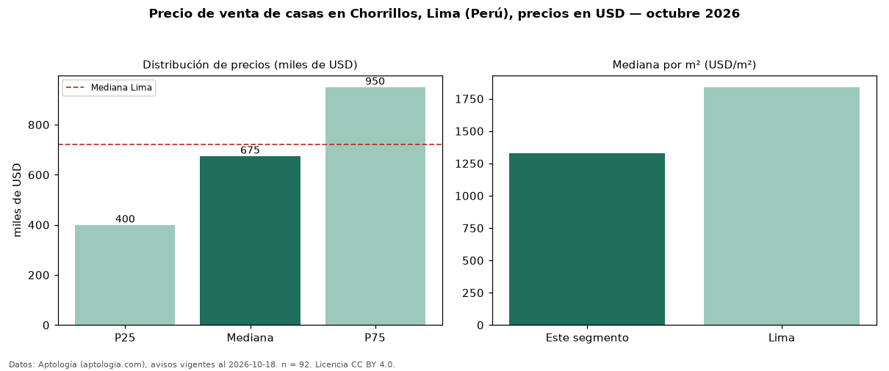

Precio de venta de casas en Chorrillos, Lima (Perú), precios en USD — octubre 2026
USD 675.000 es el precio mediano de casas en venta en Chorrillos, Lima (Perú) (n = 92 avisos). Eso es 6 % por debajo de la mediana de Lima para casas (USD 720.000). Por metro cuadrado, la mediana es USD 1.329/m² (n = 92 avisos con área), 28 % por debajo de Lima (USD 1.840/m²). El área mediana anunciada es 431 m². El segmento con más oferta es el de 3 o más habitaciones (89 avisos, mediana USD 680.000). La mitad central de los avisos va de USD 400.000 a USD 950.000 (razón 2,4), una dispersión alta. Por precio mediano es el puesto 5 de 8 distritos de Lima con al menos 30 avisos de casas en venta (USD): en la franja media. Datos: Aptología (aptologia.com), CC BY 4.0 — https://www.aptologia.com/pe/venta/lima/chorrillos. Archivos: PDF, CSV con las cifras y gráfica PNG.

| Avisos únicos | 92 |
|---|---|
| Percentil 25 | COP 400.000 |
| Mediana | COP 675.000 |
| Percentil 75 | COP 950.000 |
| Mediana por m² | COP 1.328 |
Fuente: avisos vigentes de portales inmobiliarios recopilados por Aptología, deduplicados (mínimo 30 avisos únicos por celda). Precios pedidos, no cerrados. Fecha: 2026-10-18.